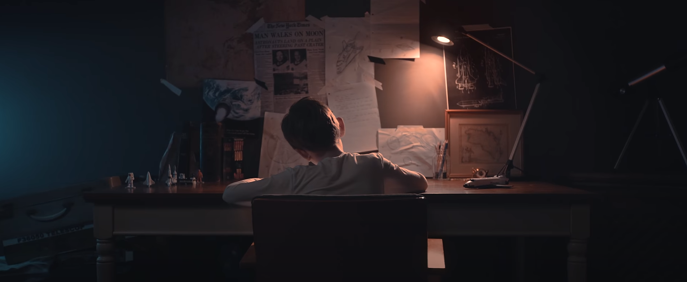

Written by Akezhan Rakishev Blog Entry 5
Public Service Announcement Draft Review
Intro
This blog post would present the analysis of the public service announcement (PSA) of my groupmate Kamila Koshimkhan with whom we are taking the WCS 240 course. I am going to review the design choices, content and
give some advice on video editing.
In order to provide my classmate with valuable feedback, I am going to review how she uses the pathos, ethos and logos throughout the PSA to effectively convey the message to the audience. Furthermore, I
would also analyze the design choices the author is making.
Topic
The main topic of the public service announcement is the stress and depression among students due to the online learning caused by the 2020 coronavirus pandemic.
Exposition
In the first scene, the protagonist is sitting in front of the table, doing the assignments. She nicely uses the pathos by mentioning the high workload of students "Endless assignments, difficult midterms, fear of looking at the grades...". By asking the rhetorical questions which are very close and sensitive for the NU students, she effectively sends the emotional appeal to the students catching the attention of the audience.
Since the author wants to shoot herself in a dark room doing her homework, I would highly recommend shooting the video from the behind while the camera slowly approaches the author.
Facts
Then, the author switches to describing the statistics regarding the stress and depression faced by the students due to online learning. To dynamically present the statistics. she is going to use the zooming-in animations.
At this point, my recommendation would be to construct an ascending sequence of the facts. For example, instead of starting with the largest percentage "73% of students face anxiety and fear", I would suggest list the data with
less percentage first. Furthermore, changing the sequence of facts would not affect the quality of the content as all of them are closely connected.
When presenting the facts, I would strongly advise the Universal Principles of Design to follow main design principles as colour matching, alignment and framing. The look of your statistics considerably contributes to its significance.
Resolution
Then, the video demonstrates the photos of the psychological training sessions and other activities as an efficient way to improve the mental health of the students. At this part, I would highly recommend using the bright tones
to make the audience feel that these resolutions are powerful and pleasant because they would bring happiness and mental harmony for the students in need. By doing that, you would be able to create a great contrast between
sadness and enjoyment.

Next, the narrator wants to describe a game that would stimulate students to maintain their physical and mental health. The narrator describes the game illustrating the screenshots of the application in the screen. At this point, I would highly recommend using the animations, recorded videos to present the functionality of the app interactively. Furthermore, describe the features of the game in the flat and minimalistic manner as shown below.
Final points
Overall, I think that Kamila effectively used the knowledge gained from the Writing for Digital Media course to develop attractive scenario for the public service announcement video. I believe that my advice would improve the aesthetics
and design of the PSA.
References
2. Space Travel (Perfect example of shooting from the behind)